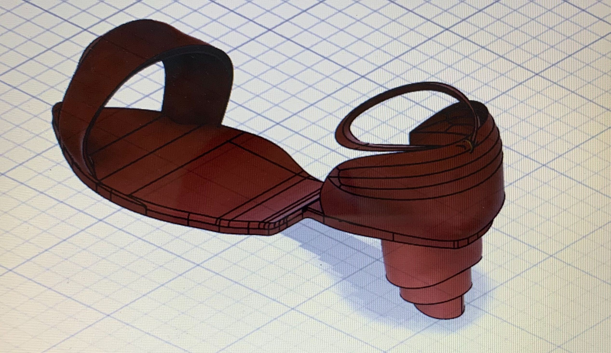

グループワークとして、ある一つの課題に取り組みオンライン上で情報共有する。
（例）現在、本当に必要とされているものを企画し、オンライン上で作ったものを発表しよう！etc.
→月に一度（頻度は変更アリ）このように先生からもらった課題or自分たちで問題提起したものに取り組み、
それを先生が評価する形式。
そしてグループワークと同時並行で、自分が研究したいテーマを進めていく。
どんどんものを生み出し、それを評価してもらったり、展示などしたい
